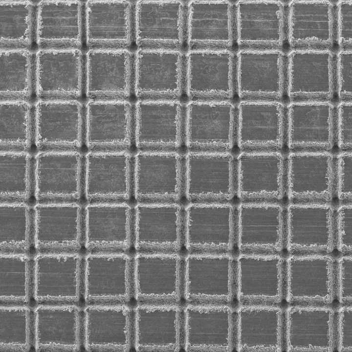
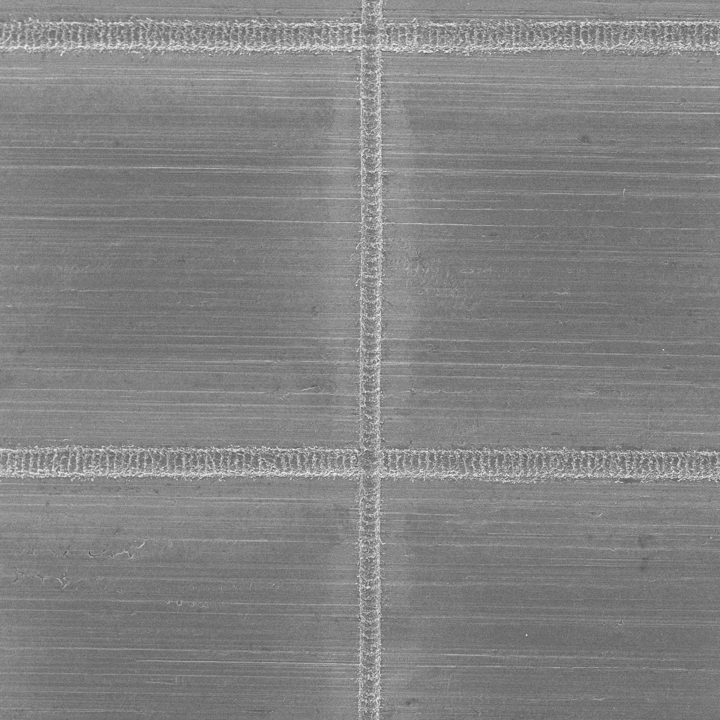
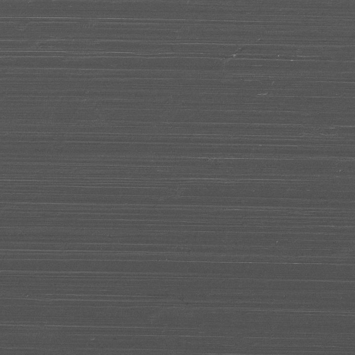
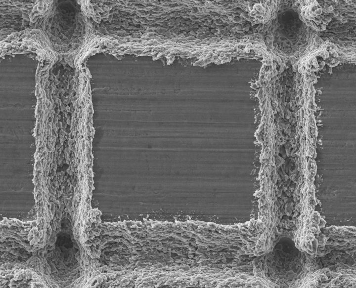

The model predicts βmax = Dmax/D0 from droplet size, speed, fluid and surface. It describes each surface by two quantities measured from SEM images: the smooth-plateau fraction φ and the texture volume Vtex. A smooth plate is simply φ = 1.
Loading the GP covariance factor (4.5 MB) for the intervals…
Surfaces sorted by φ. The smooth plate (REF-H, φ = 1) sits at the right. Error bars are 90% intervals.
Every model is scored three ways: grouped 5-fold CV over replicate conditions (ID), leave-one-surface-out over the 12 textured surfaces (LOSO, the selection criterion), and one blind prediction of the smooth REF-H plate that is never used for tuning.
RMSE difference from M2 with 95% CI. LOSO resamples the 12 surfaces; REF-H resamples its 25 replicate conditions. Left of zero = lower error than M2.
The multiplier for each surface is calibrated on the other 11 surfaces only. Dashed line: 90% target.
Each surface is a square grid of laser tracks, deep (≈25 µm) or shallow (≈6 µm), at a given pitch. The model does not see pitch and depth directly. It sees φ = (max(s − w, 0)/s)², with track width w measured from SEM (45 µm deep, 30 µm shallow), and Vtex = (1 − φ) × depth.




Mean |SHAP| on log βmax. Re and We carry most of the signal; φ and Vtex are a small correction, yet removing surface inputs nearly doubles in-distribution error for XGBoost (0.086 vs 0.051).
Each textured surface is scored by a CNN trained only on the other surfaces. REF-H was never shown in training; it is read as φ ≈ 0.69 because no training surface is smoother than φ = 0.93.
The downloadable package serves the same model over HTTP with FastAPI. Start it on your computer with uvicorn api:app --port 8000 inside droplet_app/; interactive docs are then at http://localhost:8000/docs. The request below follows your current settings on the Predict tab.
| Method | Path | Returns |
|---|---|---|
| GET | /health | model name and status |
| GET | /fluids | the five water–glycerol mixtures with ρ, σ, μ |
| GET | /surfaces | the 13 surfaces with pitch, depth, φ, Vtex |
| POST | /predict | βmax, 90% interval, wide interval, Re, We, φ, OOD percentile, warnings |